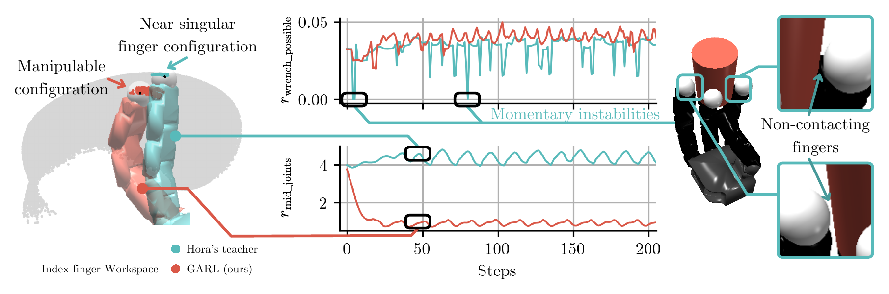
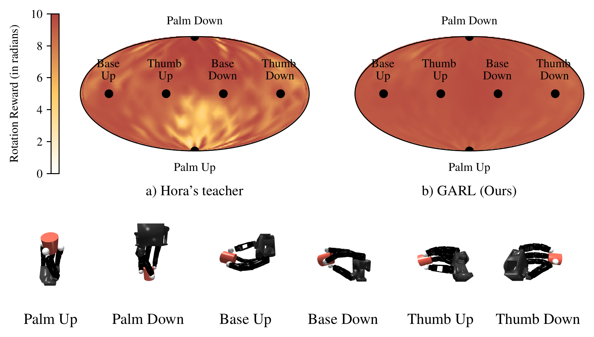

1CEA List, Bd Thomas Gobert, Palaiseau, France ·
2Université Paris-Saclay, Gif-sur-Yvette, France 3AMIAD, Pôle Recherche, Palaiseau, France
Abstract
Dexterous multi-fingered hands on robotic arms are often subject to varying orientations and
accelerations, yet most reinforcement learning (RL) methods for in-hand manipulation assume a fixed
hand pose, limiting robustness and generalization. Our approach incorporates both object-related and
hand-related considerations within a RL pipeline (Proximal Policy Optimization in our case) to achieve
desired behaviors for dexterous manipulation tasks. It targets key aspects of multifingered grasps
through quantitative measures of guaranteed stability, controllability, and manipulability. This
enables a comprehensive analysis of the learned policies, characterizing the safety margin against
undesired grasp configurations. It favors finger-gaiting sequences characterized by
perturbation-invariant in-hand rotation with up to 12× fewer training steps and improves
generalization to unseen perturbation intensities by 25×. The approach also enhances task
performance by 18.1% and reduces average joint torques by 26.7%. Object generalization experiments
demonstrate that our method provides consistent and reliable training outcomes. These simulation-only
results bring the required robustness for future real-world deployment on humanoid robots.
Figure 1. Overview of the GARL Pipeline. Our approach augments standard reinforcement learning
rewards for Manipulation (rtask, rsim2real) with analytical metrics
derived from robotic grasping theory to improve robustness and manipulability. In (A) grasps are
represented in 2D from the top for simplicity. In (B) the workspace of the index finger is represented
and split in two: one part shows the manipulability metric, ranging from yellow (near singular) to red
(high manipulability). The other half of the workspace is shaded in grey for visualization.
Highlights
Desirable quantitative measures of guaranteed object stability, internal-force controllability and
manipulability are incorporated into dedicated rewards, enabling a comprehensive analysis of the
learned policies against undesired grasp configurations.
Robustness is extended across the continuous SO(3) space of orientations, rather than a
fixed subset, with no measurable orientation-dependent performance degradation and improved sample
efficiency compared to the baseline.
A new finger-gaiting reward formulation yields an 18.1% improvement in task performance while
reducing average joint torques by 26.7%.
Results are validated on objects from the YCB benchmark, showing a more reliable and consistent
training procedure than the baseline.
Workspace Utilization & Grasp Stability

Figure 2. Comparison of workspace utilization and grasp stability.On the left: Reached
subspace of the index finger during in-hand rotation, highlighting exemplar configurations for the
Hora (Qi et al., 2022) baseline (in blue) and GARL (in red). The baseline straight finger corresponds
to a high rmid_joints penalty, while GARL shows a folded finger configuration with enhanced
manipulability. On the right: Evolution of grasp stability (rwrench_possible) for the
two policies from identical initial conditions. Insets highlight momentary instabilities in the
baseline where the grasp matrix loses full rank, and in which external perturbations may cause the
object to slip or fall.
Robustness to Unseen Hand Orientations

Figure 4. Robustness to unseen hand orientations. The planispheres display the mean rotation
reward for (a) the Hora's teacher (baseline) and (b) GARL. Black markers indicate the six canonical
hand orientations used during training. The baseline fails to generalize to many orientations,
producing large regions of poor performance, whereas our method yields a substantially more uniform
performance distribution over the sphere.
BibTeX
@inproceedings{thomas2026garl,
title = {{GARL: Grasp-Aware Reinforcement Learning for Robust and Dexterous in-Hand Rotation}},
author = {Thomas, Guillaume and Rabarisoa, Jaonary and Filliat, David and Pham, Quoc-Cuong and Grossard, Mathieu},
booktitle = {Proceedings of the 23rd International Conference on Informatics in Control, Automation and Robotics - Volume 1},
year = {2026},
pages = {571--581},
publisher = {SciTePress},
isbn = {978-989-758-870-9},
issn = {2184-2809},
doi = {10.5220/0015359700004979}
}